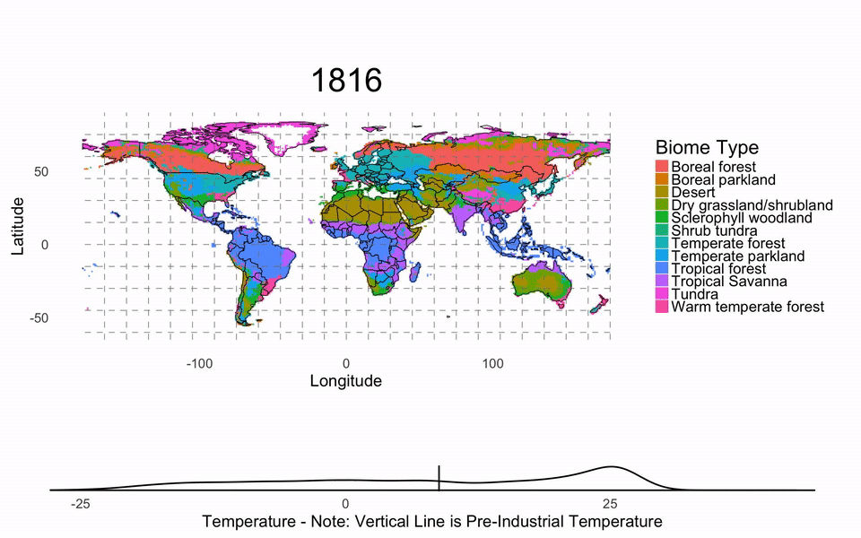

Mendelsohn, Robert, Iain C. Prentice, Oswald Schmitz, Benjamin Stocker, Robert Buchkowski and Benjamin Dawson. 2016. The Ecosystem Impacts of Severe Warming. American Economic Review, 106(5): 612-14.
Abstract: This paper uses a quantitative dynamic ecosystem vegetation model to explore the potential impact of warming up to 9-12 degrees C on global ecosystems. The paper does not find evidence of a global collapse in terrestrial ecosystems but there is evidence of substantial changes. Temperate and tropical forests expand and replace boreal forests and forests shift to woodlands and parkland at high temperatures. Net primary productivity and standing forest biomass per hectare rise. These changes will affect dependent animal species. Further research is needed to measure the resulting benefits and damages to market and nonmarket services.
Below is a gif of the resulting ecosystem movement:
